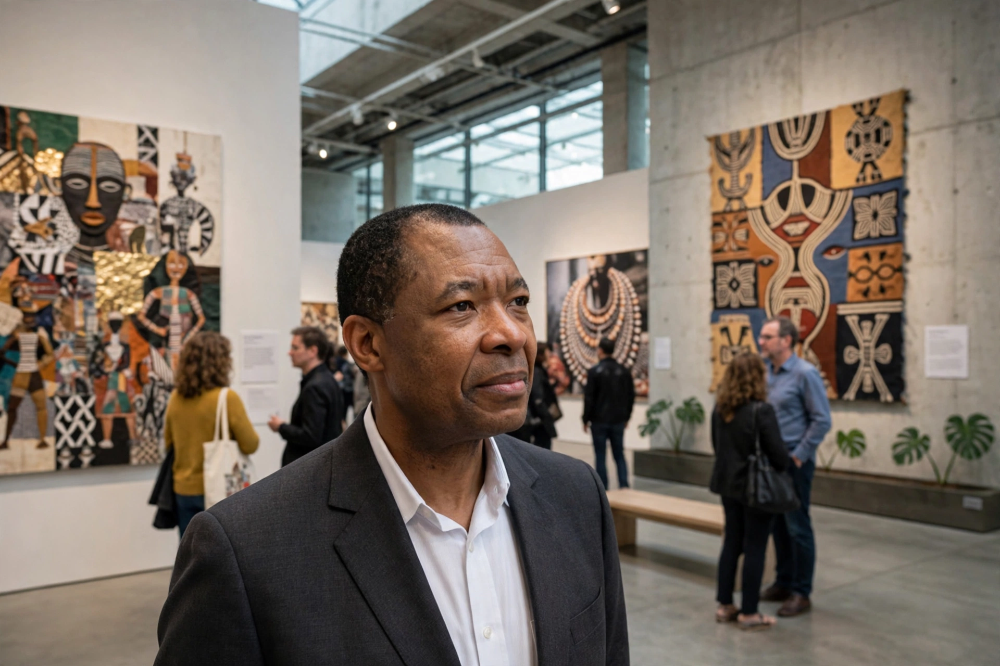

Okwui Enwezor (23 October 1963 – 15 March 2019) was a Nigerian curator, art critic, writer, poet and educator who lived for much of his career in the United States and Germany. He is widely credited with transforming the global exhibition landscape by bringing African and other non-Western art into the centre of major international biennials and by insisting that contemporary art be understood within postcolonial political histories.
| Okwui Enwezor | |
|---|---|
 Enwezor in Munich | |
| Born | 23 October 1963, Calabar, Nigeria |
| Died | 15 March 2019 (aged 55), Munich, Germany |
| Occupation | Curator, art critic, writer |
| Known for | Documenta 11; 56th Venice Biennale; founding Nka: Journal of Contemporary African Art |
Enwezor was born in Calabar, Nigeria, and grew up in Enugu. In 1982 he moved to the United States and studied political science at New Jersey City University. In 1994 he founded Nka: Journal of Contemporary African Art, published with Duke University Press, which became a key platform for scholarship on contemporary African art.
His breakthrough exhibition was the second Johannesburg Biennale, Trade Routes: History and Geography (1997). He was then appointed artistic director of documenta 11 in Kassel (2002), the first non-European to direct the quinquennial; he structured it around five "platforms" on different continents addressing democracy, truth and reconciliation, and creolisation. He subsequently directed the Seville Biennial (2006), the Gwangju Biennale (2008) and the Paris Triennale (2012).
In 2011 Enwezor became director of the Haus der Kunst in Munich. In 2015 he curated the 56th Venice Biennale, titled All the World's Futures, which featured a reading of Marx's Das Kapital in the central pavilion and awarded the Golden Lion to Ghanaian artist El Anatsui for lifetime achievement. He stepped down from the Haus der Kunst in 2018 citing health reasons, and died of cancer in March 2019.
Enwezor's curatorial method combined rigorous research with explicitly political framings of globalisation. He championed artists such as El Anatsui, Chris Ofili and Steve McQueen early in their careers, and his large-scale, research-driven "mega-exhibitions" remain a reference point — and a point of debate — for curators worldwide.